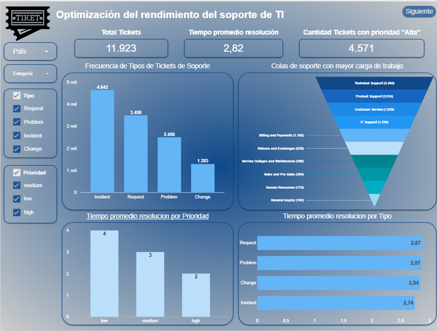
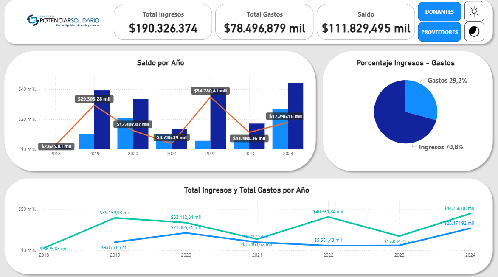
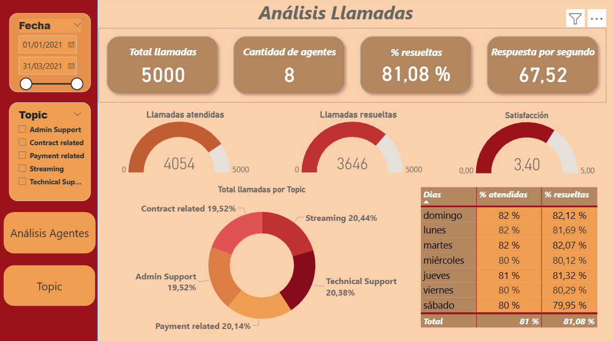

Proyectos Destacados
Tickets de soporte IT
🎯 Objetivo
Analizar más de 11.900 tickets de soporte para mejorar tiempos de resolución, identificar patrones recurrentes y optimizar recursos.
📊 Técnicas aplicadas
⚡ Power BI
- Modelo relacional de tickets y tiempos de resolución.
- Medidas DAX para calcular ratios e indicadores clave.
- Visualizaciones con KPI, gráficos de tendencia y segmentadores.
🌍 Looker Studio
- Modelado de datos desde Google Sheets.
- Campos calculados: cantidad de tickets, tiempo promedio y ratio de resolución.
- Dashboards interactivos con mapas y tablas.
🐍 Python / Pandas
- Limpieza y normalización de datasets de soporte.
- Análisis exploratorio (EDA) con Pandas.
- Visualización de patrones con Matplotlib.
📊 Tableau
- Visualización.
- Creación de campos calculados.
💡 Insights clave
- Se detectaron países con mayores demoras en resolución de tickets.
- Identificación de problemas repetitivos que consumen más recursos.
- Oportunidades para redistribuir personal y reducir tiempos de atención.
🚀 Impacto
El dashboard permitió a los equipos de IT optimizar procesos, asignar recursos estratégicamente y mejorar la satisfacción del cliente.
 Ver proyecto en Tabeau
Ver proyecto en Tabeau

🎯 Objetivo
Realizar un análisis económico-financiero integral de una ONG mediante la integración de datos de donantes, proveedores y cuentas contables. El propósito fue comprender el saldo disponible, optimizar la gestión de fondos y ofrecer una visión más clara para la toma de decisiones.
📊 Técnicas aplicadas
⚡ Power BI
- Modelado de datos: Diseño de un modelo entidad-relación (MER) en Draw.io.
- Base de datos: Importación, limpieza y estructuración de información en MySQL a partir de archivos CSV.
- Visualización: Creación de dashboards interactivos en Power BI.
- Implementación de una tabla calendario para el análisis temporal.
- Medidas DAX utilizadas:
COUNTROWS,CALCULATE,DISTINCTCOUNT,DIVIDE. - Establecimiento de relaciones entre tablas de donantes, proveedores, tipo de contribuyente, frecuencia, país y estado (activo/inactivo).
🌍 Looker Studio
- Modelado de datos desde Google Sheets.
- Campos calculados: cantidad de tickets, tiempo promedio y ratio de resolución.
- Dashboards interactivos con mapas y tablas dinámicas.
💡 Insights clave
El informe fue diseñado en versiones modo claro y modo oscuro, priorizando la simplicidad, la estética y la facilidad de interpretación. Entre los principales hallazgos se destacan:
- Distribución de ingresos por tipo de donante y país.
- Gastos clasificados por proveedor y categoría.
- Evolución mensual del saldo disponible.
🚀 Impacto
El análisis dotó a la organización de una herramienta sólida para tomar decisiones estratégicas, planificar presupuestos con mayor precisión y fortalecer su sostenibilidad financiera.
Análisis Call Center
🎯 Objetivo
Desarrollar un dashboard interactivo en Power BI y Looker Studio a partir de un archivo CSV, con el fin de analizar las llamadas del Call Center, mejorar los tiempos de respuesta y optimizar la gestión de soporte y atención al cliente.
📊 Técnicas aplicadas
⚡ Power BI
- Modelo de datos: Esquema estrella con relaciones bien definidas entre hechos y dimensiones.
- Medidas DAX: Uso de funciones como
SUM,SUMX,MAX,AVERAGEyCOUNTROWS.
🌍 Looker Studio
- Modelado de datos: Conexión directa al archivo Sheets.
- Campos calculados: Creación de métricas como porcentaje de llamadas atendidas, porcentaje de resolución y tiempo promedio de respuesta.
- Visualizaciones: Gráficos de barras, indicadores y tablas.
- Segmentación: Filtros interactivos por agentes y temas.
🐍 Python / Pandas
- Transformación y limpieza de datos del Call Center (tratamiento de nulos y tipos).
- Cálculo de métricas clave: tiempo promedio de respuesta, % de llamadas resueltas y satisfacción del cliente.
- Análisis de tendencias diarias y desempeño de agentes con Pandas y Matplotlib.
- Creación de un dashboard interactivo en Streamlit para seguimiento de KPIs.
📌 Preguntas de negocio respondidas
- ¿Cuántas llamadas fueron atendidas?
- ¿Cuántas llamadas fueron resueltas?
- ¿Cuál es el porcentaje de llamadas atendidas?
- ¿Cuál es el porcentaje de llamadas resueltas?
- ¿Cuál fue el tiempo promedio de respuesta?
🚀 Impacto
El dashboard permitió a las áreas de soporte y atención al cliente identificar puntos críticos en la gestión de llamadas, reducir los tiempos de respuesta y elevar la satisfacción del cliente.
Tecnologías

Power BI
Looker Studio

Excel

Google Sheets

SQL

MySQL

Python
Educación
Data Analytics
Guayerd - IBM
Análisis de datos con Power BI
LevelUp
Python para Data Science
Udemy
Contadora Pública
UNNE

📚 Blog & Artículos
Algunos artículos donde comparto conocimientos sobre análisis de datos y herramientas BI.
Inteligencia Artificial para todos: Por qué no necesitas ser programador para entenderla y aprovecharla
Leer artículoMachine Learning vs Inteligencia Artificial: ¿Cuál es la diferencia y por qué importa?
Leer artículoTorres Brenda - Analista de Datos
Ayudo a empresas y profesionales a transformar datos en información valiosa. Amplio conocimiento en Excel, Google Sheets, Power BI, Looker Studio, SQL y Python.
Contacto
¡Espero tu consulta o comentario!